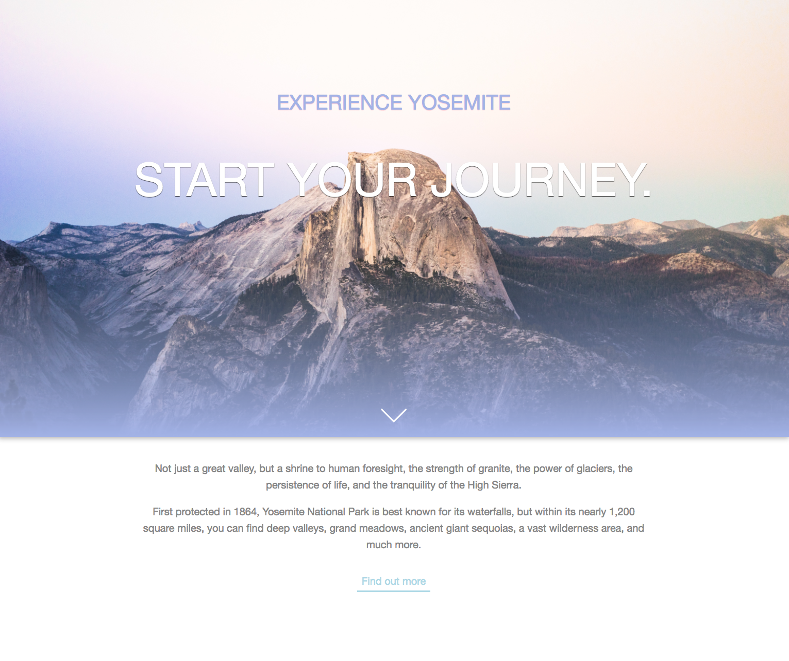

My speciality is in front-end web development, ux/ui design, and digital media. I am passionate about clean code (vanilla when possible), that is cross-platform compatible and performance optimized. As a designer, my goal is to create value for people and organizations. I strive to produce user-focused experiences that are both beautiful and engaging.
Skills
My development skills include HTML5, CSS3, Javascript, jQuery, Ruby / Rails, PHP, Wordpress, Bootstrap, SQL, Git / Github, and Shopify.
On the design side, I'm proficient with Photoshop, Illustrator, InDesign, and content creation for email (Constant Contact), and social media (Instagram and Facebook).
Helped design and implement the creation of a new Shopify webstore. Maintained all code and responsible for feature enhancements, integrating third party apps, and creating all necessary graphics.
Chompr
Was assigned to a team for our final project at Tech Talent South, and given 2 weeks to create a fully functioning web application. I came up with the idea to create a dating app that matched users based on their food preferences. I was responsible for all front-end development. Utilized bootstrap for the design and created logo in Photoshop.

Yosemite
Created this personal project to improve my knowledge of CSS selectors.
Twerk
This Rails Twitter clone lets you post "Twerks" and follow other users. This app was my first time working with devise as well as scaffolding by hand.
Soul Donuts
One of my first rails apps! This app was created for an imaginary donut shop. Users can look at what types of donuts are available, as well as the price.
Digital Media
Premier Yarns Instagram
Started the Instagram account and have gained 1,200+ followers in one year. In charge of creating and editing content.
Premier Yarns Lookbooks
Create and design themed lookbooks to showcase our yarns and free patterns. Click the image to view all.
Premier Yarns Emails
Created, managed, and sent emails to our 30,000+ subscriber list (3-4 emails weekly). Click the image to see more.